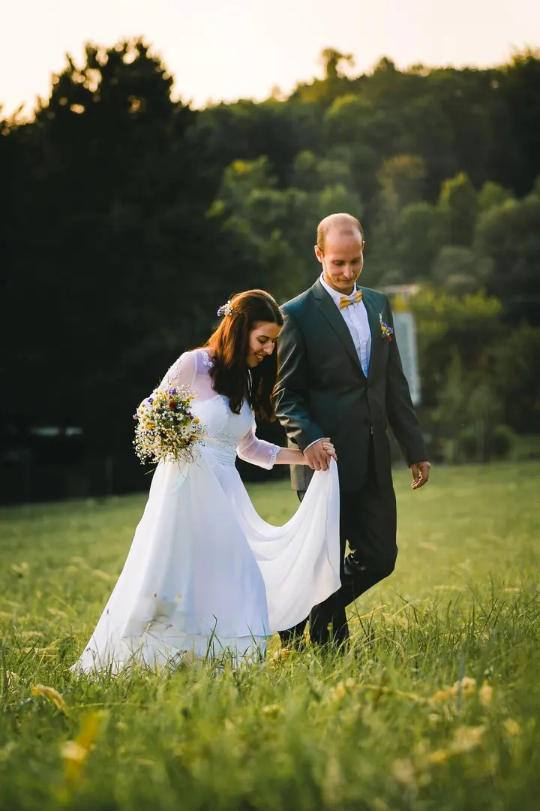
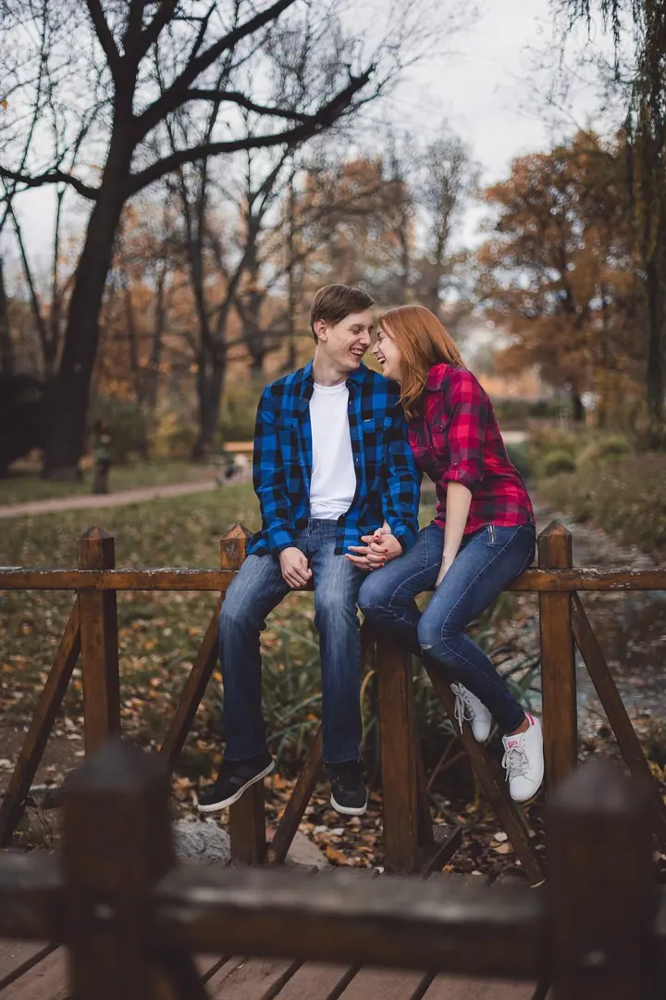
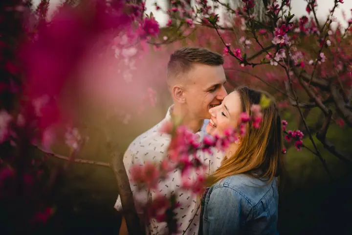

jedna
Svatby
Na svatbě se pohybuji jako jeden z hostů a fotím hlavně pozorné detaily, úsměvy a nervozitu ve vzduchu. Můžete si vybrat půldenní nebo celodenní focení, případně Vám připravím nabídku na míru.

Svatební, rodinný a portrétní fotograf · Brno, Česká republika, Slovensko

Jmenuji se David Vávra a fotím svatby, rodiny i páry v Brně a okolí. Záleží mi na pohodové atmosféře, ve které se před objektivem budete cítit přirozeně. Za mnou zůstávají fotky plné detailů, které Vám i po letech připomenou, jak jste se ten den cítili.
Více o mně
Co fotím
jedna
Na svatbě se pohybuji jako jeden z hostů a fotím hlavně pozorné detaily, úsměvy a nervozitu ve vzduchu. Můžete si vybrat půldenní nebo celodenní focení, případně Vám připravím nabídku na míru.
dvě
Focení, které si užije celá rodina. Dbám na uvolněnou atmosféru, aby ho hravě zvládly i menší děti.
tři
Portrét pro Vaše sociální sítě nebo lifestyle fotky pro blog. S přípravou rád pomůžu, poradím, co si vzít na sebe, jak se nalíčit a kde se potkat.
Portréty týmu, reprezentativní fotky prostor, produktové fotky i obsah pro sociální sítě. Fotky často tvoří první dojem zákazníka, tak ať vypadáte na úrovni.
Fotograf je v den svatby jedním z nejbližších hostů.


Za objektivem
Zdravím, jmenuji se David a jsem fotograf z Brna. Fotím už osm let a mám za sebou přes 230 odevzdaných projektů, od portrétů přes svatby až po firemní galerie. Fotit jezdím po celé republice i na Slovensko.
Na svatbách se snažím splynout s hosty. Svatební fotograf je v ten den jedním z Vašich nejbližších hostů, a tak si dávám záležet, abych obřad nerušil a aby se vedle mě všichni cítili příjemně. Fotím hlavně pozorné detaily, protože právě díky nim si i po letech živě vybavíte emoce celého dne.
Při rodinném a portrétním focení platí totéž: uvolněná atmosféra, žádné strojené pózy. S přípravou rád pomůžu, poradím, co si vzít na sebe a kde se potkat, aby focení hravě zvládly i menší děti.
David
Napište mi, co máte v plánu. Domluvíme se na termínu a ujasníme si, jaké fotky si představujete.
Poradím Vám s místem, oblečením i líčením. U svatby si projdeme harmonogram dne, abych na nic důležitého nezapomněl.
Fotím v klidu a pohodě, bez zbytečného aranžování. Na svatbě se pohybuji mezi hosty a sleduji detaily a emoce.
Pečlivě fotky vyberu a upravím. Pak už si je jen prohlédnete a můžete se k nim kdykoli vracet.
Portfolio
Otázky
Půldenní focení (7 hodin, 250+ fotek) stojí 23 000 Kč, celodenní (13 hodin, 400+ fotek) 29 000 Kč. Každá další hodina je za 900 Kč. Jde o ceny platné pro rok 2025, na speciální přání připravím individuální nabídku.
Balíček s 20 fotkami (cca 1 hodina) stojí 5 300 Kč, s 35 fotkami (cca 1,5 hodiny) 5 900 Kč a s 50 fotkami (cca 2 hodiny) 6 500 Kč. Jde o ceny platné pro rok 2025.
Ano, fotím po celé republice i na Slovensku. V Brně a blízkém okolí je doprava v ceně, pro vzdálenější focení počítejte, prosím, s dopravným 7 Kč/km.
Určitě. Dávám si záležet na uvolněné atmosféře, aby si focení užila celá rodina včetně těch nejmenších.